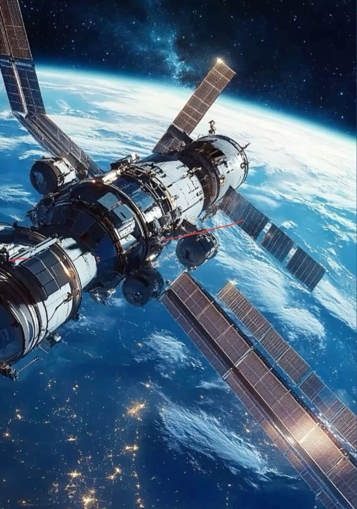

Many countries have established space agencies. These agencies are responsible for launching satellites, conducting scientific research, exploring planets, and developing technologies that support communication, weather forecasting, navigation, disaster management, and environmental monitoring on Earth.

An outstanding achievement of global cooperation in space exploration is the International Space Station (ISS). The ISS is a large space laboratory orbiting Earth where astronauts from different countries live and work together. It is jointly operated by major space agencies.
The ISS allows scientists to perform experiments in microgravity that cannot be conducted on Earth, helping in advancements in medicine, biology, physics, and space technology.
Space agencies and the ISS symbolize peaceful international collaboration and shared scientific goals. Through joint missions and research, nations overcome political boundaries to expand human knowledge of the universe. Studying space agencies and the International Space Station helps us understand the importance of teamwork, innovation, and scientific progress in improving life on Earth and preparing humanity for future space exploration.